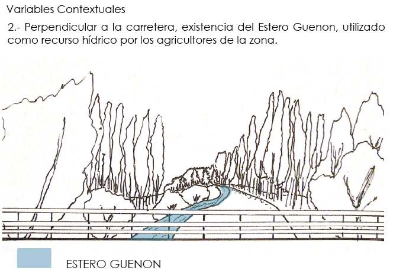
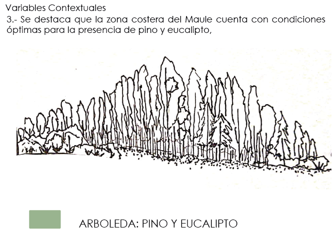

“...EL TERRITORIO ES UN ESPACIO MANEJADO, ADAPTADO A LAS NECESIDADES DEL GRUPO SOCIAL QUE LO OCUPA Y LO TRANSFORMA DE ACUERDO CON SUS NECESIDADES, O SEA, SE PRODUCE UN PROCESO DE TERRITORIALIZACIÓN”
- Joaquín Gallastegu; “Reflexiones sobre el concepto de barrio”.
El presente estudio se llevó a cabo el bimestre I de Taller III, el cual buscó principalmente el desarrollo de un VACÍO RURAL, que se fue complejizando a medida que se incluían diversas VARIABLES PROGRAMÁTICAS Y CONTEXTUALES. Por otro lado, se generó un método de organización del vacío, el que fuera capaz de vincular una actividad económica con el territorio escogido y su contexto próximo.
Desarrollo del curso
Dicho predio, colinda con la carretera k-24 y, a su vez, al este del Estero Guenon. El análisis del lugar del permite desprender tres variales contextuales del entorno proximo las que se presentan mediante los croquis a continuación. Sin embargo existe una variable de paisaje, ya que al colindar el predio con un aserradero industrial, resulta ser bastante trascendental la constante modificación que se genera en el paisaje, debido a que cada año los aserraderos que inician su producción en la zona aminoran la flora existente, la que es en su mayoría pino y eucalipto; a esto llamamos: LA MUTACIÓN DEL PAISAJE.


SINTESIS DE PROYECTO
Decisiones generales
Para llevar a cabo dicho proyecto es necesario diseñar el predio de tal forma de crear una atmosfera que permita acoger a ocho familias y adoptar un aserradero como fuente laboral.Para esto se tomaron tres decisiones:
- Se distancia el área privada del área laboral por el peligro que significa la maquinaria.
- Se relacionan las viviendas visualmente con el área pública.
- Se conecta el área pública con el área laboral visualmente para vincular a los habitantes con la actividad productiva.
Decisiones de diseño de edificios
Se incorpora el lenguaje del secado de la madera como sistema constructivo de los edificios. Para esto se utilizan referentes como Guillermo Acuña y Smiljan Radic.Dichas decisiones se aprecia en la maqueta y los planos.

CORTES X-X' y Y-Y' RESPECTIVAMENTE


CORTES ESPECIFICOS


PLANTAS DE NAVEGACIÓN


-
-
- 
- 
-
Cada una de las imagenes resultantes del analisis ha permitido comprender el contexto territorial en el cual se encuentra el predio; es así como ha sido posible evaluar las condiciones con las que se cuentan para desarrollar viviendas unifamiliares y una actividad productiva. Para mas información sobre qué es y cómo hacer un análisis de sitio o lugar, click aquí.
TALLER DE PROYECTOS 3 / VIVIENDA RURAL Y VACÍO COMUNITARIO; SIST. DE AGRUPAMIENTO PRODUCTIVO.
Esteban Zamora + Paulina Farias /
Estudiantes: Francisca Castro + Patricia Letelier + M° Luisa Lorca